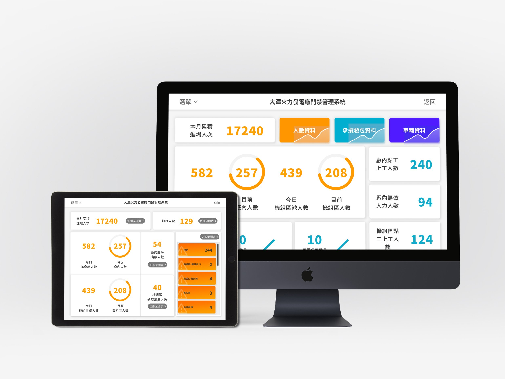
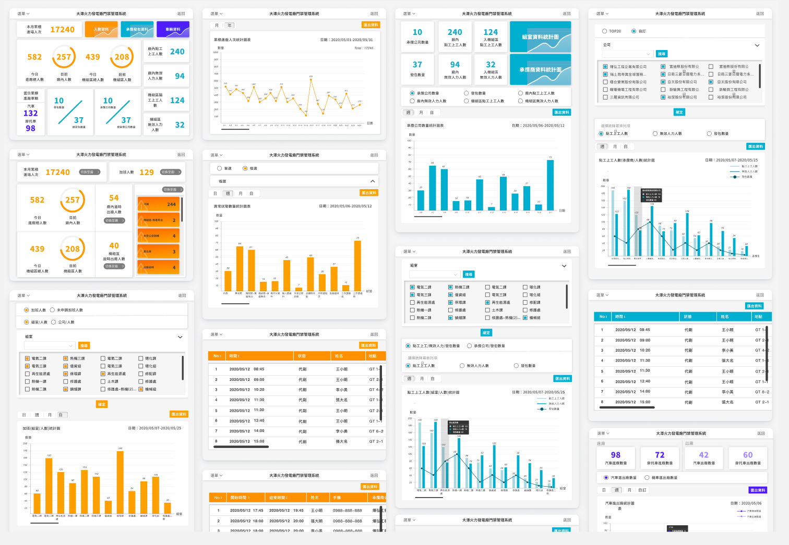
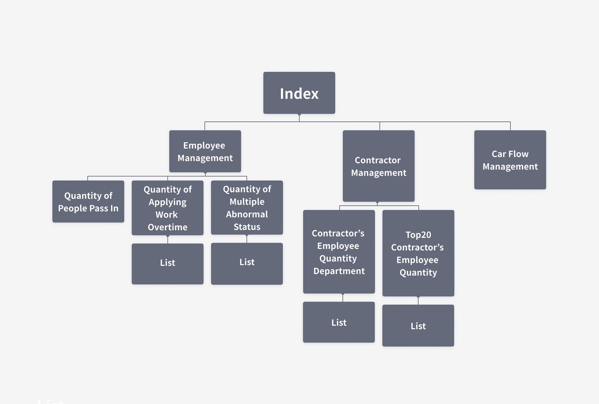
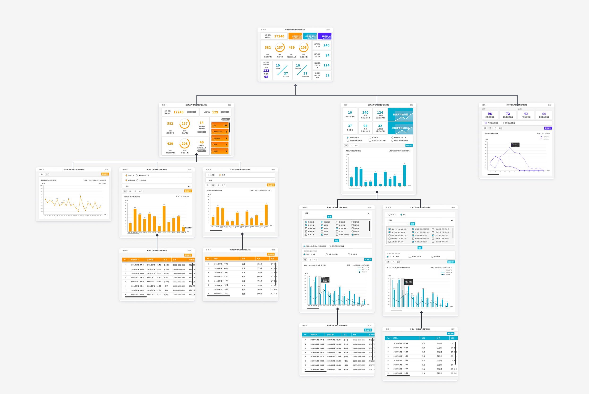
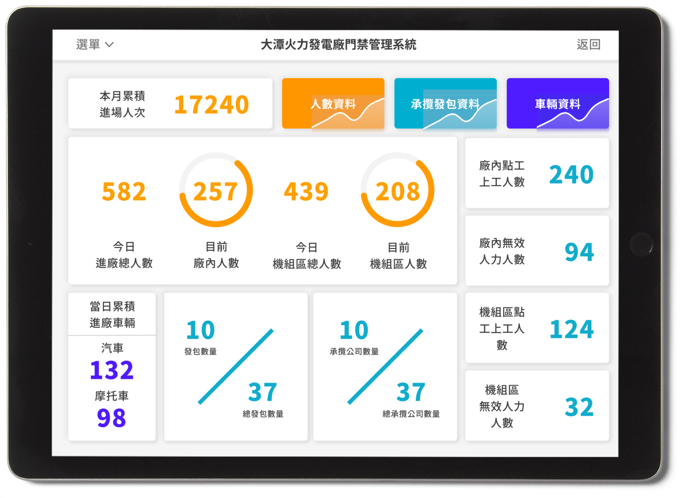
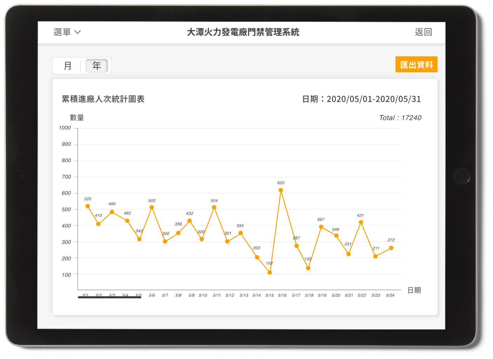
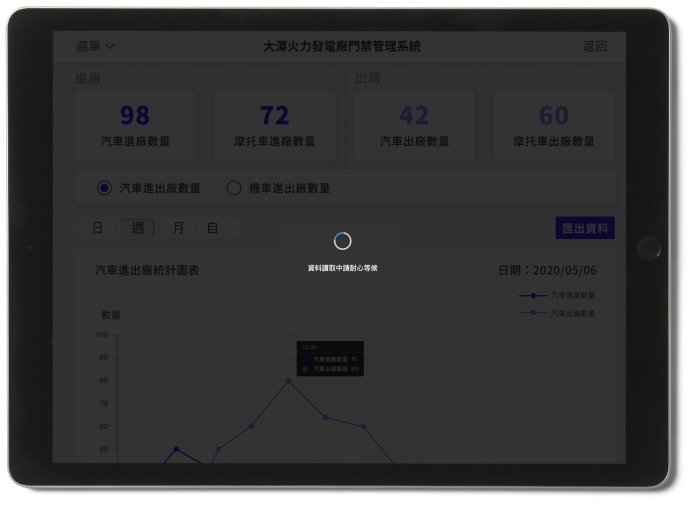

Factory Monitoring Dashboard
@ Taiwan Power Company, Tatan Power Plant
(Taiwan's Largest Natural Gas-Fired Combined-Cycle Power Plant)


Overview
Our primary goal in the project was to improve factory management. This dashboard is only a part of
the system. It measures people and car flow and manages the contractors, construction, and access
control.
Timeline
2 month
Team
1 Project Manager, 1 UX/UI designer and Front-end developer, 1 Back-end Developer
My Role
Main UI/UX design, Front-end engineeringg
User Interviews
The project aimed at integrating fragmented disconnected data and progress into the system, we interviewed
multiple users and discussed what is important for the client.
Define
Based on the interview, we defined the users, their motivations and tasks, and the context of use. (I
would only show information associated with the chart design below.) The main users are the managers, who
need to control the operation of the factory immediately and effectively. Thus, when patrolling the factory,
users bring the tablet computer and use the data to assist their work.
Ideation
A dashboard is a quick preview of the most crucial information for users, offering an easy way to navigate
directly to various areas of the application that require users’ attention. Hence, after defining the design
purpose of the dashboard, we started to focus on what was necessary for them, and the key elements to show
in the dashboard. Then, we classified the data into three parts.
- Car Flow: Statistics of the hourly car flow to prevent situations with insufficient parking spaces.
- Employees: Check for abnormal statuses and the number of people who apply for work overtime.
- Contractors: Check on the details of the contractors based in each department of the factory.


Prototyping

Design Highlights: Clear Design
Since the users needed to get information from complex data, we avoided unnecessary styling that
would
distract them. For instance, when distinguishing the classifications with different colors, we set
up
colors
that contrasted and ensured their readability. We additionally followed consistent naming
conventions to
reduce confusion.

Design Highlights: The Right Chart Type For Different Data.
Since the wrong chart type could lead to misinterpretation of data, we needed to identify the
purpose
of
each different piece of information first. Then, we could determine which kind of chart we should
use
and
what value should be on the x-axis. For example, the car flow should use a line chart with time as
the
x-axis. However, other questions remained. How many values should be listed – what about the minimum
and
maximum quantity of values? Should we display values over an interval or among items or groups? We
had
to
consider distinct details for each of the various types of information.

Design Highlights: Reload The Page Every Five Minute
We needed to ensure that real-time visual information could be updated automatically. Unlike with
other
systems, where the users log in each time and close the sites after finishing, the dashboard
displays
current resources and status. It is regarded as an immediate control tool to help users.
Reflections
The Balance Between Client And User Experiences
When working with the government, conflicts may arise when the decision makers’ desires contrast
with user needs or our design. In those instances, it is hard to say who is right. Moreover, the
development process will be a continual struggle until someone gives up for the sake of completing
the project. Eventually, someone has to hold authority over decisions. As a designer, I can only try
my best to balance our goals and desires. Nevertheless, when it does not work out, trust and respect
have to follow suit; I should believe that everyone has the same objective to better the products
even we probably see things from different perspectives.
Challenges With The Programming Dashboard
Cookie Settings
We used token-based authentication in the system, which is more efficient than storing the tokens on
the user’s end. Although attackers who have access to the key can easily acquire all user data, our
system requires using the Intranet and the devices provided by the factory. Therefore, we avoided
the disadvantages of using tokens. I learned not only about cookies, but also about the
relationships between sessions and cookies in this project. I built the settings and checked the
cookie function on every page to confirm user authentication. I loaded the information on the pages
if the test succeeded.
“Apexchart” Plugin Implementation
Using the plugins was challenging, especially when I wanted to modify and create new features
independently. I finally designed several functions that had not been included in the original
plugin. As a designer, I considered those features essential for enhancing the user experience.
Therefore, I spent a lot of time reading the plugin’s documentation and coding the design. For
example, initially, each of the bars in the bar chart plugin set the width based on the quantity of
the values; however, we needed to show hundreds of values, so I created a scrollbar on the x-axis
and made sure the width of the bar remained fixed.
Challenges In Dashboard Design
Definition of the Purpose of the Dashboard
I have designed numerous dashboards for different enterprises to meet their diverse needs;
nonetheless, every time is still a new start for me. Based on my experience, the first step of
designing a dashboard is to identify the purpose; obtaining the purpose can make the following phase
smoother.
Detailed Considerations
Many details can get overlooked when designing dashboards, and I am still learning how to improve
this. For instance, I have tried to make the design process more standardized, but failed. I think
this occurred because the data can vary in tiny details, which causes the decision-making at every
step to include too many factors at the same time.
Responsive Web Design
Designing a block dashboard structure that looks decent on all devices is difficult. Designers have
to make sure all the words and values display clearly, with enough margin, and without distortion of
the width and height.
I may have missed some details about the challenges of designing a dashboard, but creating dashboards
is fun. Whenever I start to feel that I have conquered the mountain after finishing a project; the next
dashboard still presents a brand-new challenge, and more opportunities to learn.